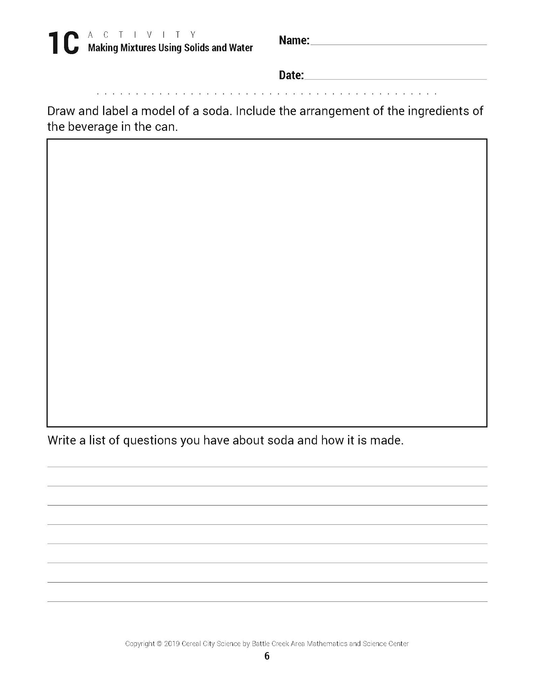
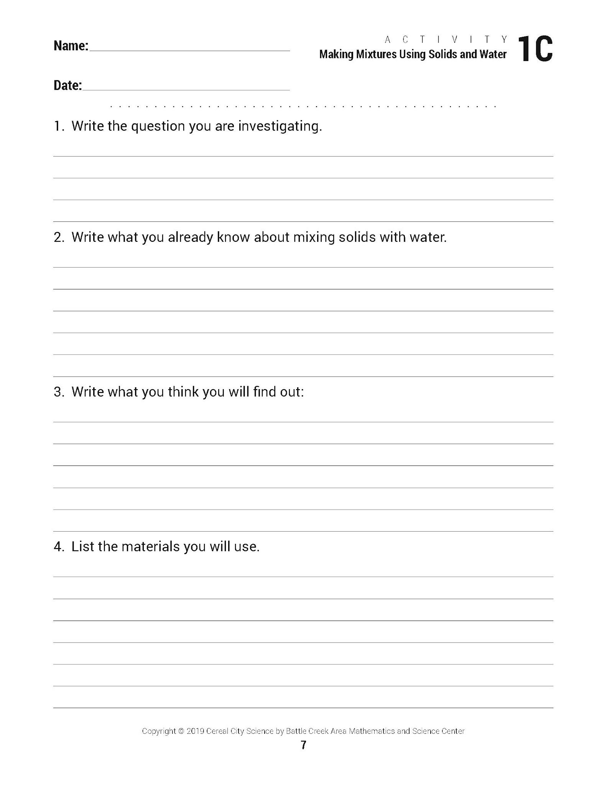
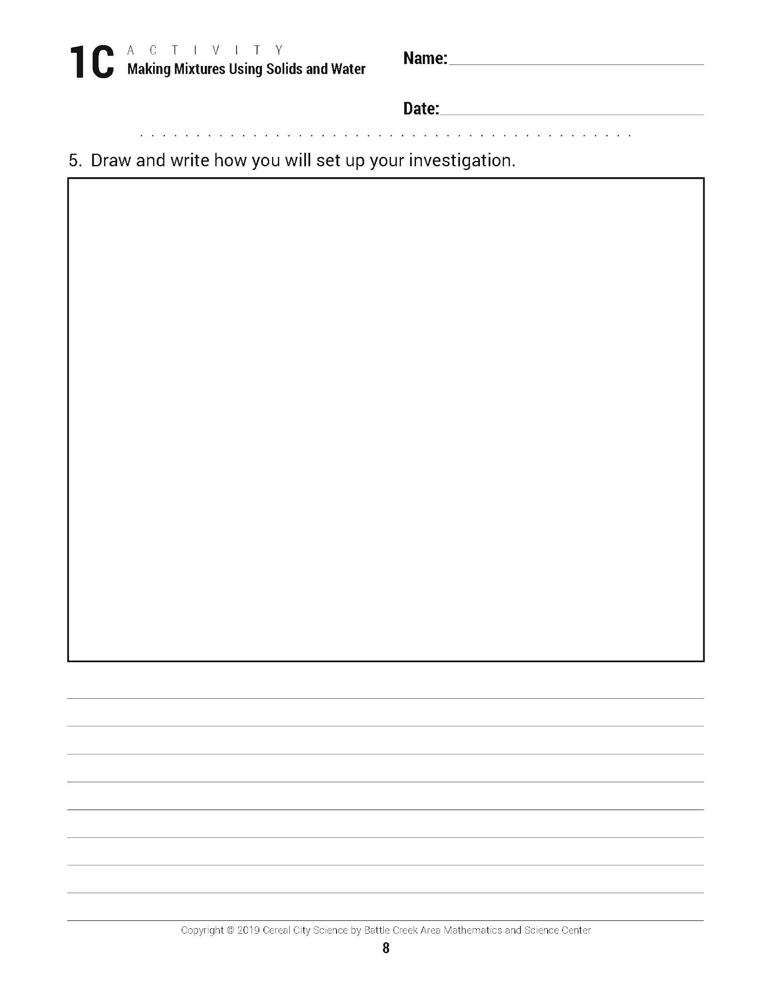
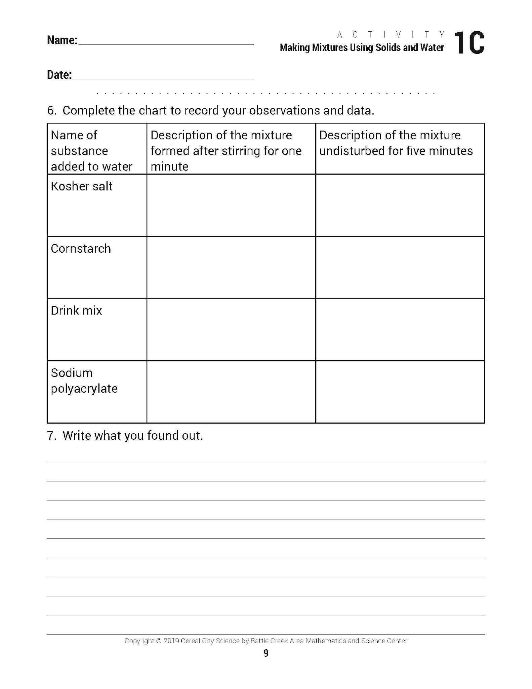

Draw and label a model of a soda. Include the arrangement of the ingredients of the beverage in the can.
Write a list of questions you have about soda and how it is made.
Student journal pages 6–9 • Select a page below to read its editable text.
Draw and label a model of a soda. Include the arrangement of the ingredients of the beverage in the can.
Write a list of questions you have about soda and how it is made.
This is the unmarked scanned page for checking original diagrams, exact wording, or layout. The editable HTML content is above.

1. Write the question you are investigating.
2. Write what you already know about mixing solids with water.
3. Write what you think you will find out:
4. List the materials you will use.
This is the unmarked scanned page for checking original diagrams, exact wording, or layout. The editable HTML content is above.

5. Draw and write how you will set up your investigation.
This is the unmarked scanned page for checking original diagrams, exact wording, or layout. The editable HTML content is above.

6. Complete the chart to record your observations and data.
| Name of substance added to water | Description of the mixture formed after stirring for one minute | Description of the mixture undisturbed for five minutes |
|---|---|---|
| Kosher salt | ||
| Cornstarch | ||
| Drink mix | ||
| Sodium polyacrylate |
7. Write what you found out.
This is the unmarked scanned page for checking original diagrams, exact wording, or layout. The editable HTML content is above.
